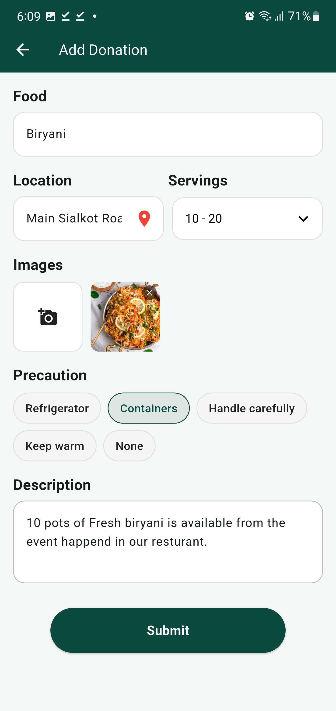
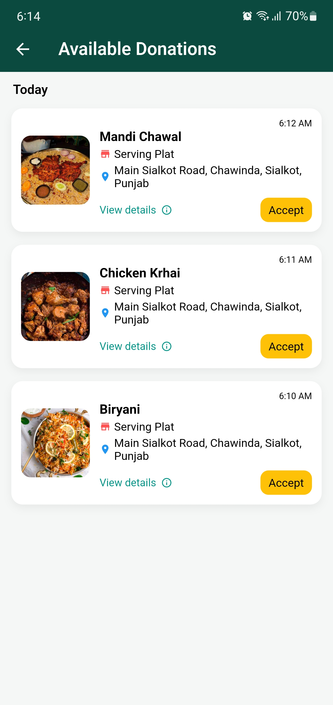
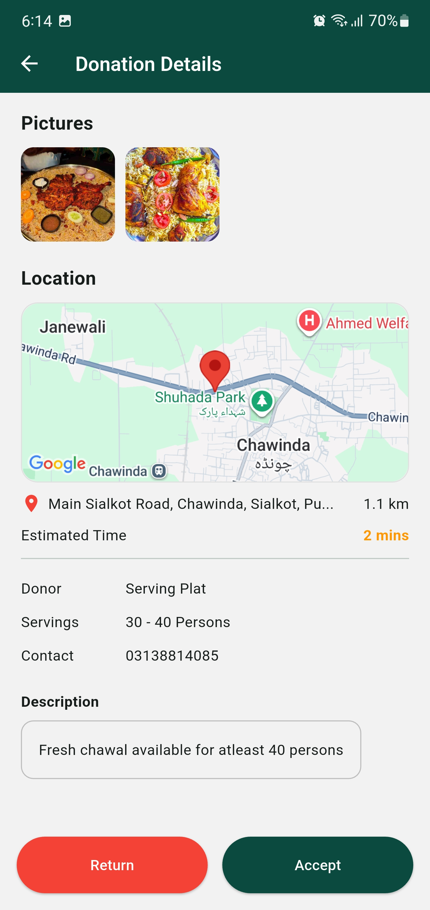
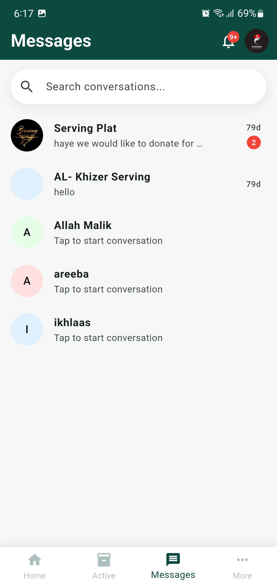
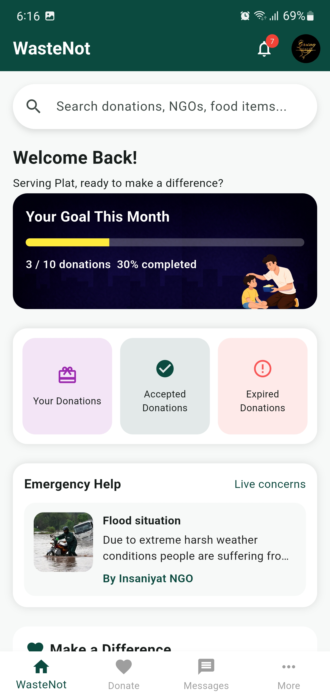
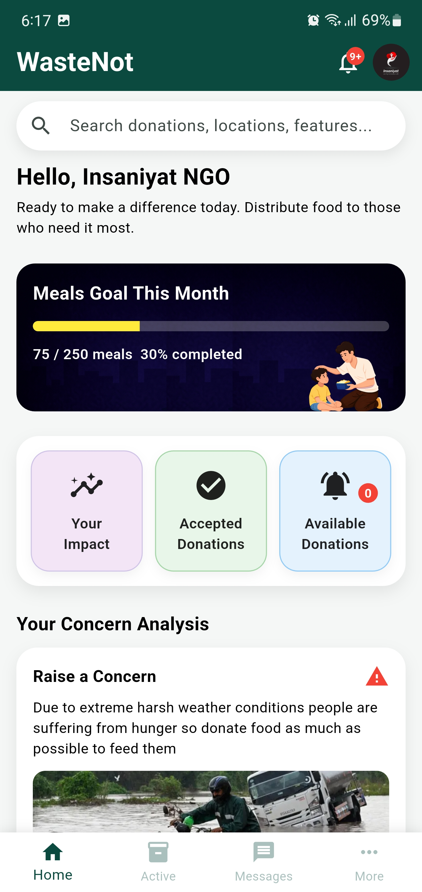

WasteNot — Food Rescue & Donation App
A mobile app connecting food vendors and restaurants with NGOs, so surplus food gets donated instead of wasted — fighting food waste and hunger at the same time.
Sponsor
SOS Children's Village Sialkot
My Role
Developer
Type
Final Year Project
Tech Stack
Flutter, Firebase, Firestore, Google Maps

3
Role-based modules
Live
Real-time Firestore sync
Maps
Location-based matching
Auth
Secure sign-in, ready for Play Store
The problem
Restaurants and food vendors regularly end up with surplus food at the end of the day, while nearby NGOs are working to feed people who need it. Without an easy way to connect the two, that extra food usually just goes to waste. WasteNot was built to close that gap — a direct channel between donors (restaurants and food vendors) and NGOs, so surplus food gets redistributed instead of thrown away.
The project was sponsored by SOS Children's Village Sialkot — an orphanage and child welfare organization — as my final year project, with the goal of building something genuinely usable — not just a class demo, but an app built to a standard where it could realistically be published on the Play Store.
Who uses it
The app is built around three distinct roles, each with its own module:
- Donors (restaurants, food vendors) — list surplus food available for pickup
- NGOs — browse and claim available donations near them
- Admins — oversee the platform and manage activity across both sides
Donors and NGOs can also message each other directly in-app to coordinate pickup details once a donation is accepted — see the inbox below.



A donor posts a donation, an NGO browses nearby options, then reviews pickup distance and details on the map before accepting.

The inbox — once a donation is accepted, donors and NGOs message each other directly in-app to coordinate the pickup.


Separate home dashboards for donors and NGOs — each tracking their own goals and activity.
How it's built
WasteNot is built with Flutter on the front end, giving one codebase for a consistent cross-platform app. The backend runs on Firebase — Firestore handles the real-time data (donation listings, claims, user profiles, messages) and Firebase Authentication handles secure sign-in for both donors and NGOs. Google Maps is integrated so NGOs can see and prioritize nearby donations, since pickup logistics matter just as much as the donation itself.
Role-based modules
Donors, NGOs, and Admins each get their own flow and permissions, instead of one generic interface trying to serve everyone.
Firestore-first data model
Designed the data structure around Firestore's document model from the start, rather than forcing a traditional relational class diagram onto a NoSQL backend.
Location-first matching
Google Maps integration so NGOs can see how far a donation is and prioritize pickups that are realistic for them.
Process
Requirements with the sponsor
Worked with SOS Children's Village Sialkot to understand the real donor–NGO gap and scope the app around what would actually get used.
UML modeling for three modules
Built use case diagrams for the NGO, Donor, and Admin modules, and revised them after invigilator feedback during evaluation.
Firebase & Firestore setup
Set up Firestore collections for donations, users, and claims, plus Firebase Authentication for secure donor and NGO accounts.
Flutter UI for each role
Built the donor, NGO, and admin interfaces in Flutter, each tailored to what that role actually needs to do.
Maps integration & polish
Added Google Maps for location-based matching and refined the app to a standard ready for Play Store submission.
A key decision: fitting the model to Firestore
Early on, there was a question of whether to model the data using a traditional object-oriented class diagram, the way you would for a relational database. Since WasteNot runs on Firestore, a NoSQL, document-based database, I instead designed the data structure around Firestore's document/collection model directly — which better reflects how the data actually gets read and written in the app, rather than forcing a relational structure onto a backend that doesn't work that way.
Reflections
Building for a real sponsor taught me to design around actual constraints, not assumptions — next time I'd get NGO and donor feedback earlier, before the UI was mostly finished.
Want to know more about how it works? Get in touch.